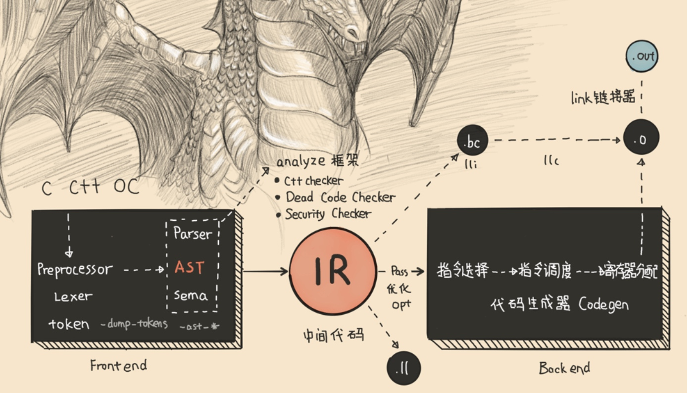
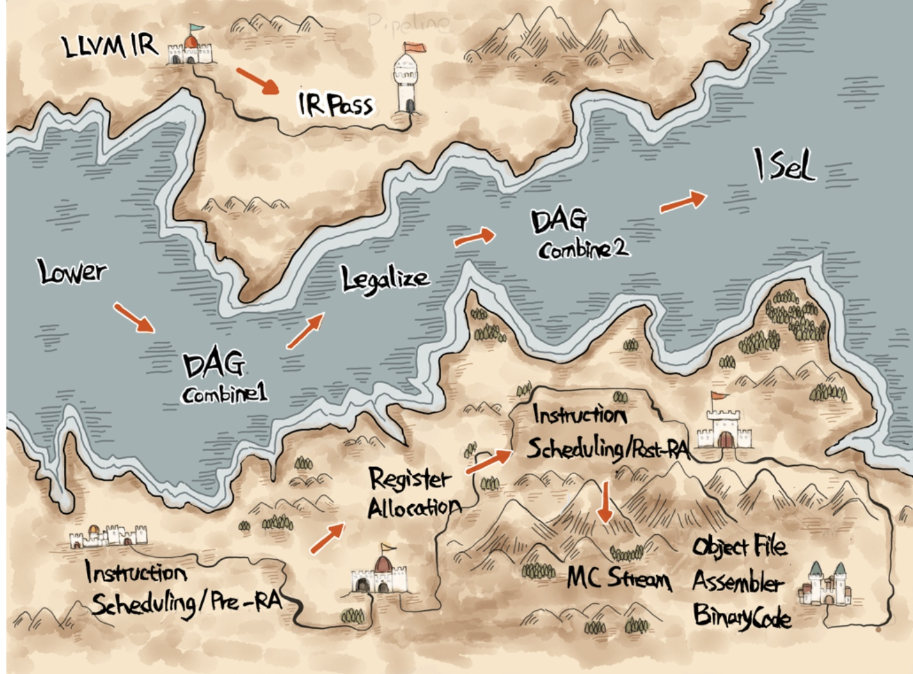
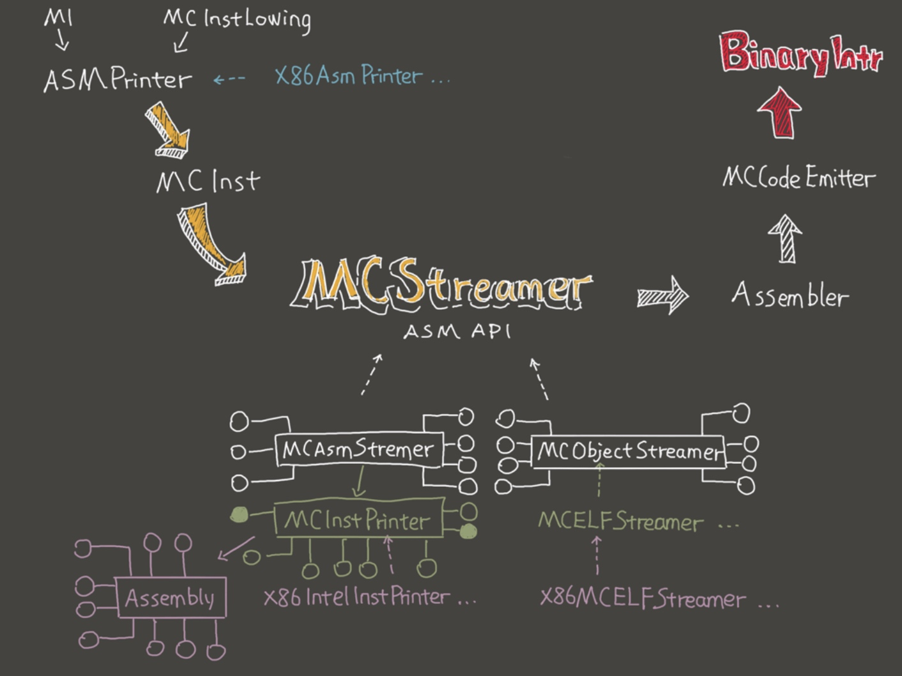

整个编译流程中 LLVM Backend的位置

LLVM Backend的流程图

CodeGen 阶段
- Instruction Selection 指令选择：将IR转化成目标平台指令组成的定向非循环图 DAG（Directed Acyclic Graph）
- Scheduling and Formation 调度与排序：读取 DAG，将 DAG 的指令排成 MachineInstr 的队列
- SSA 优化：多个基于 SSA（Static Single Assignment） 的 Pass 组成。比如 modulo-scheduling 和 peephole optimization 都是在这个阶段完成的
- Register allocation 寄存器分配：将 Virtual Register 映射到 Physical Register 或内存上 Prolog / Epilog 生成
- 确定所需堆栈大小：Machine Code
- 晚期优化：最后一次优化机会
- Code Emission：输出代码，可以选择汇编或者二进制机器码。
SelectionDAG
- 构建最初的 DAG：把 IR 里的 add 指令转成 SelectionDAG 的 add 节点
- 优化构建好的 DAG：把一些平台支持的 meta instructions 比如 Rotates，div / rem 指令识别出
- Legalization SelectionDAG 类型：比如某些平台只有64位浮点和32位整数运算指令，那么就需要把所有 f32 都提升到 f64，i1/i8/i16 都提升到 i32，同时还要把 i64 拆分成两个 i32 来存储，操作符的合法化，比如 SDIV 在 x86 上回转成 SDIVREM。这个过程结果可以通过 llc -view-dag-combine2-dags sum.ll 看到
- 指令选择 instruction selector（ISel）：将平台无关的 DAG 通过 TableGen 读入 .tb 文件并且生成对应的模式匹配代码从而转成平台相关的 DAG
- SelectionDAG Scheduling and Formation：因为 CPU 是没法执行 DAG，所以需要将指令从 DAG 中提取依据一定规则比如 minimal register pressure 或隐藏指令延迟重排成指令队列。（DAG -> linear list（SSA form） -> MachineInstr -> MC Layer API MCInst MCStreamr -> MCCodeEmitter -> Binary Instr）
Register Allocation 寄存器分配
寄存器在 LLVM 中的表达
物理寄存器在 LLVM 里均有 1 - 1023 范围内的编号。
虚拟寄存器到物理寄存器的映射
直接映射使用 TargetRegisterInfo 和 MachineOperand 中的 API。间接映射的API用 VirtRegMap 以正确插入读写指令实现内存调度
LLVM 自带的寄存器分配算法
llc -regalloc=Greedy add.bc -o ln.s
- Fast - debug 默认，尽可能保存寄存器。
- Basic - 增量分配
- Greedy - LLVM 默认寄存器分配算法，对 Basic 算法变量生存期进行分裂进行高度优化
- PBQP - 将寄存器分配描述成分区布尔二次规划
Code Emission
